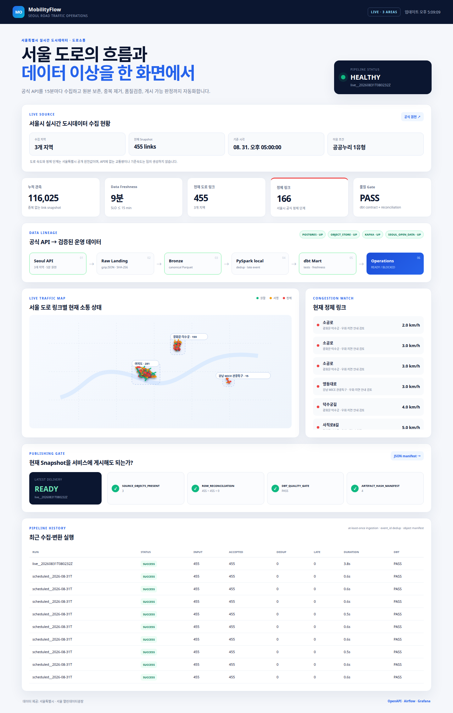

01
수집 구조 구현
일정과 수집 자료의 식별 기준 정의
Airflow에서 정기 수집을 조정하고 원문과 변환 자료를 나눠 보관했습니다. 지역·도로 구간·수집 기준시각으로 같은 처리 대상을 구분했습니다.
공개 데이터 수집원본 보관형식 변환·저장품질 검사사용 가능 판정
확인한 결과기준시각은 실제 관측시각이 아니라 수집시각입니다. 중복 구분의 적용 범위를 이 기준에 맞췄습니다.
공개 API 수집부터 품질 검사와 실행 상태 확인까지
이력서의 같은 제목 → 포트폴리오 PDF 4쪽 → 이 작업 기록
확인한 실행 기록: 2026.08.31 / 현재 수집 상태가 아닌 과거 기록
웹 작업 기록QR 또는 제목 링크로 상세 내용 열기
구현 단계는 순서로, 확인된 시험·실행 시점은 날짜로 표시했습니다. 현재 서버 상태를 뜻하지 않습니다.
수집 구조 구현
Airflow에서 정기 수집을 조정하고 원문과 변환 자료를 나눠 보관했습니다. 지역·도로 구간·수집 기준시각으로 같은 처리 대상을 구분했습니다.
확인한 결과기준시각은 실제 관측시각이 아니라 수집시각입니다. 중복 구분의 적용 범위를 이 기준에 맞췄습니다.
저장·변환 구현
원천 행만 저장되거나 완료 기록만 남는 상황을 피하기 위해 PostgreSQL 트랜잭션으로 두 작업을 묶었습니다. dbt의 분석용 테이블 생성은 원천 적재 뒤의 별도 단계로 두었습니다.
확인한 결과같은 파일은 건너뛰고 새 파일의 기존 관측 행은 갱신하는 방식으로, 파일 재처리와 행 중복을 구분했습니다.
2026.08.28
writer를 중단한 동안 전송 자료를 보존한 뒤 재기동했습니다. 회수된 자료에 오류 격리와 중복 제거를 적용하고 같은 처리를 다시 실행했습니다.
확인한 결과1,200개를 보존해 17초에 회수했고 오류 56개를 격리했습니다. 첫 변환에서 중복 104개를 제거했으며 즉시 재실행 입력은 0건이었습니다.
2026.08.31
개인 컴퓨터의 예약 실행 기록과 저장 행수·dbt 검사 상태를 모아 조회 화면으로 정리했습니다. 실행 기록 JSON과 동작 녹화도 연결했습니다.

확인한 결과누적 115,570행, 최근 10회 성공, 최근 수집·저장 455행을 확인했습니다. 이후 시점 화면의 116,025행과 구분했습니다.
별도 AWS 기능 확인
S3 읽기와 CloudWatch 상태 기록 등을 Fargate 일회성 작업으로 확인했습니다. Spark는 로컬 변환·재실행 경험으로 정리했습니다.
확인한 결과일정 실행과 품질 검사의 결과를 확인했지만 상시 클라우드 운영이나 분산 처리 성능 개선의 근거로 확대하지 않았습니다.
8월 31일 기록에서 누적 115,570행과 최근 10회 성공을 확인했습니다. 별도 중단 시험에서는 자료 회수·오류 격리·중복 제거를 확인해 재실행 동작을 설명할 근거를 확보했습니다.
한 번 저장되는 것뿐 아니라 실패와 재실행을 처리할 기준이 필요했습니다. 완료 기록·관측 행·변환 단계를 분리하면 무엇을 다시 실행해야 하는지 설명할 수 있습니다.
2026.08.31의 보존된 기록입니다. 현재 서버 상태를 조회하지 않습니다.
녹화 화면의 116,025행은 위 요약보다 뒤 시점의 누적 값입니다. 화면 속 상태 표시는 당시의 기록입니다.
Airflow가 15분 수집과 재실행을 조정합니다. event_id는 지역·도로 링크·수집시각을 5분 단위로 내린 값으로 구성합니다. API의 실제 관측시각이 아니므로 같은 원천 관측을 다른 수집 구간에서 다시 받는 것까지 식별하지는 못합니다. 원문 gzip JSON과 변환 Parquet 파일에는 실행별 해시·행수 기록을 남깁니다.
PostgreSQL/dbt의 28개 데이터 검사와 처리 기록의 원본 객체 수·행수 대조·dbt 결과·해시 목록을 사용합니다. READY의 해시 조건은 목록 개수와 해시 값의 존재를 확인합니다. 저장 객체를 다시 읽어 해시가 일치하는지 검사하는 기능은 아닙니다. 원천에 없는 교통량이나 기준속도는 임의로 만들지 않습니다.
Airflow·PostgreSQL/dbt·PySpark는 로컬 Docker에서 실행했으며 PySpark의 실행 모드는 local[2]입니다. 현재 수집량에는 분산 처리가 필요하다는 근거가 없습니다. 이 프로젝트에서는 Spark의 변환·중복 제거·재실행 동작을 검증했으며 처리량 개선이나 분산 운영 성과를 주장하지 않습니다.
정기 수집과 변환·검사는 개인 컴퓨터에서 실행했습니다. 전체 처리 흐름의 클라우드 상시 운영 실적은 아닙니다.
예약 실행 기록은 2026년 8월 31일 로컬 Docker 환경의 누적 115,570행과 최근 10회 성공을 보여줍니다. 화면 녹화와 같은 날 이후 AWS 확인 기록의 116,025행은 더 늦은 확인 시점의 값입니다.
AWS에서는 S3 객체 적재, ECR 이미지 저장소와 CloudWatch 상태 지표를 구성했습니다. Fargate 일회성 작업이 이미지 읽기·S3 일부 읽기·CloudWatch 기록을 수행하고 종료 코드 0으로 끝나는지 확인했습니다. 상시 ECS 서비스나 AWS에서 Airflow·Spark를 운영한 결과는 아닙니다.
현재 실시간 상태가 아닌 과거 실행 기록입니다. QR에서는 검사 결과·원본 기록·실행 녹화를 확인할 수 있습니다.
PostgreSQL의 같은 트랜잭션에서 raw.traffic_observation 적재와 ops.object_manifest 파일 완료 기록을 확정합니다. 완료 전 실패하면 둘 다 취소됩니다. 이미 처리한 동일 파일은 완료 기록을 확인해 건너뜁니다. 새 파일에 기존 event_id가 있으면 새 행을 추가하지 않고 기존 원천 행을 갱신합니다. 이 적재가 끝난 뒤 dbt가 fct/dim 분석용 테이블을 만드는 별도 단계를 실행합니다. Airflow에는 재시도·시간 제한과 max_active_runs=1을 설정했습니다.
fct_traffic_observation은 지역·도로 링크·5분 단위 수집 기준시각으로 구분되는 event_id 한 건을 저장하는 증분 모델입니다. dim_road_segment는 도로 구간별 최신 명칭·좌표·길이를 보관합니다. 사실 테이블은 event_id, 도로 정보는 segment_id가 기준입니다. observed_at은 실제 관측시각이 아니므로 최신성 검사도 수집 기준시각의 경과를 확인하는 범위입니다.
2026.08.28 통제된 전송 복구 시험에서 Bronze writer를 중단한 동안 1,200개 이벤트를 보존하고 재기동 후 17초에 밀린 자료를 회수했습니다. 첫 변환은 중복 104개를 제거했고 즉시 재실행 입력은 0건이었습니다. 서울 API의 실제 장애나 처리량 측정은 아닙니다. READY는 처리 기록과 검사 결과의 조건 통과를 뜻하며 파일 저장 후 재검증을 뜻하지 않습니다.
공개 저장소의 README에 Docker Compose 실행, API 키 설정, 검증 명령과 운영 범위를 설명합니다. 데모 열람에는 API 키가 필요하지 않습니다. 직접 수집을 재현할 때는 사용자 본인의 서울 열린데이터광장 키와 로컬 실행환경이 필요합니다.
| 용어 | 이 자료에서의 의미 |
|---|---|
| API·파이프라인 | 외부 자료를 요청하는 통로와, 수집·변환·저장·검사를 순서대로 연결한 처리 흐름입니다. |
| Airflow·dbt | 각각 수집 일정·재실행 관리와 분석용 테이블·품질 검사를 담당합니다. |
| 사실·기준정보 테이블 | 시간에 따라 쌓이는 도로 관측 기록과 도로별 최신 명칭·위치 정보를 나눈 구조입니다. |
| 해시 기록·READY | 처리 기록의 건수, dbt 결과, 파일별 해시 기록이 조건을 충족한 상태입니다. 저장 객체를 다시 읽어 해시를 대조하는 검사는 아닙니다. |
| observed_at·최신성 | 실제 관측시각이 아니라 수집시각을 5분 단위로 내린 값입니다. 최신성 검사도 이 기준시각이 얼마나 지났는지를 봅니다. |
| AWS 확인 범위 | S3 저장, ECR 이미지 보관, CloudWatch 상태 기록, Fargate 일회성 작업을 확인했습니다. 전체 수집 흐름의 클라우드 상시 운영은 아닙니다. |